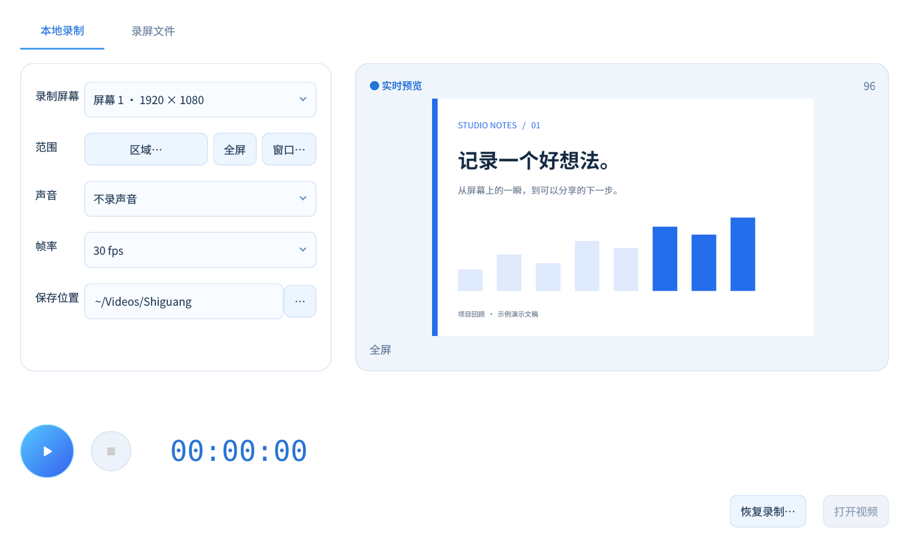
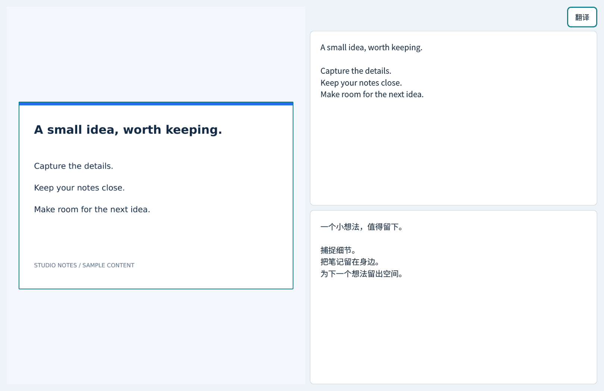

截下，直接标注。
箭头、矩形、画笔和遮盖。文字写完还能点回去修改，复制或保存都在选区工具条里。
屏幕上的片刻，也可以接着用。
截图、标注，或录下完整过程。
把图片里的文字取出来，留在本机继续编辑。
Windows · macOS · Linux / 免费开源 · 无需账号

少切换，顺手完成
标注直接在选区完成。需要识别文字时，再打开左右对照的工作台。
箭头、矩形、画笔和遮盖。文字写完还能点回去修改，复制或保存都在选区工具条里。
离线识别中英文、代码与简单表格。左边看原图，右边校对；需要翻译时，再展开原文与译文。
截图、取色、贴图和录屏快捷键都能修改。打开设置，按下你想用的组合键，保存即可。
OCR 和中英翻译在本机运行，模型随包提供。截图默认只复制，保存与导出由你决定。

录制时，界面退后一步
选好屏幕、区域或窗口，三秒倒计时后开始。点击浮球展开继续、暂停和停止；拖到屏幕边缘，就收成蓝色半圆。
录屏文件页集中显示文件大小与时间，可播放、删除或打开所在文件夹。
SHIGUANG CAPTURE / v1.4.9
选择对应系统。安装包包含 OCR 与中英离线翻译模型。
双击安装 · 自动创建快捷方式
下载 .exeApple Silicon · 解压后移入应用程序
下载 .tar.gzDebian / Ubuntu · X11 · 双击安装
下载 .deb网站提供中英文介绍；当前应用界面以中文为主。
可以。已发布安装包自带 OCR 和中英翻译模型，无需账号或额外下载模型。网站演示使用的是示例内容。
不用。框选后直接标注、复制、保存或贴图；只有提取文字、代码或表格时才打开识别工作台。
目前适用于有完整边框、无合并单元格的简单表格，最多 30 行 × 12 列。复杂表格和滚动长截图有使用限制，结果请人工校对。
启动后进入设置的「快捷键」页，点击输入框，按下新组合键再保存。默认 F1 截图、F6 打开录屏或暂停/继续、F7 停止保存。
关闭窗口后会驻留托盘，方便随时使用快捷键。要完全退出，请使用托盘菜单。